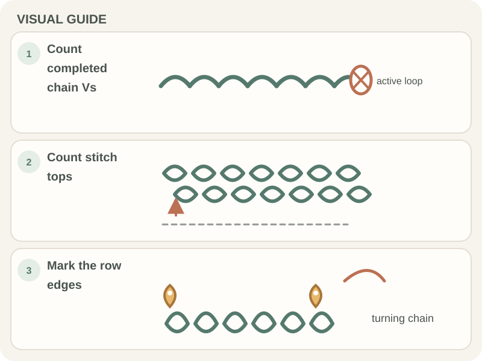

Crochet Basics · Beginner guide
How to Count Crochet Chains and Stitches
Learn where a chain ends, how to spot each stitch, and what not to include in your count.

Short answer: Count the completed chain links or stitch tops, one at a time. Do not count the loop on the hook, and use the pattern’s instructions to decide whether a turning chain counts as a stitch.
Before you begin
A crochet hook, a small swatch or foundation chain, and a removable stitch marker are helpful. Lay the work flat in good light so you can see each top loop.
On a chain, look for V-shaped links. On a row of stitches, look for the V-shaped tops along the edge nearest you. A turning chain is the chain or chains at the start of a row that bring the yarn up to working height. Whether it counts as a stitch depends on the pattern.
Step-by-step instructions
- Step 1: To count a foundation chain, find the first completed V after the slip knot. Move along the chain and count each V once. Do not count the slip knot or active loop.
- Step 2: To count a worked row, lay the fabric flat and identify the V-shaped top of each stitch from one edge to the other.
- Step 3: Place a marker in the first stitch after counting it. Continue across, counting each next V once; mark the last stitch if the edge is hard to see.
- Step 4: At the end of the row, compare your total with the pattern. Check its note about turning chains before adding or excluding the chain at the edge.

How to check your work
Count a second time in the opposite direction. The total should match the first count and the stitch count required by the pattern.
If the number differs, inspect the first and last stitches before undoing work in the middle of the row. Edge stitches are easiest to miss.
Common beginner problems
- If your chain count is off by one, check whether you accidentally counted the slip knot or active loop.
- If a row count changes from one row to the next, check the first and last stitch and confirm whether the turning chain counts in that pattern.
- If you lose your place, move the marker after each counted stitch or group stitches in sets of five.
Making stitches easier to count
Choose a light or high-contrast yarn and lay the work flat under good light. A removable stitch marker can hold your place while you count.
You do not need a different hook to count. Focus on the chain links or stitch tops and follow the pattern’s turning-chain rule.
Practice plan
Count a short foundation chain, then count a row of single crochet. Compare how the chain V’s differ from the stitch V’s.
When you can find the first and last stitch, use that habit with the row-turning lesson and the edge guide.
Quick summary
- Count each completed chain link or stitch top once.
- Do not count the slip knot or active loop.
- Follow the pattern’s rule for turning chains.
Frequently asked questions
Do I count the loop on the hook?
No. It is the active loop for the next stitch, not a completed chain or stitch.
Does a turning chain count as a stitch?
It depends on the stitch and pattern. Follow the pattern’s note; designers differ.
How can I keep track while counting?
Place a removable marker in the first stitch, then move it as you count, or count in small groups.